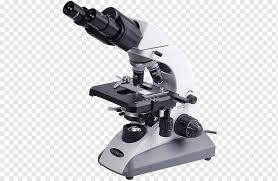
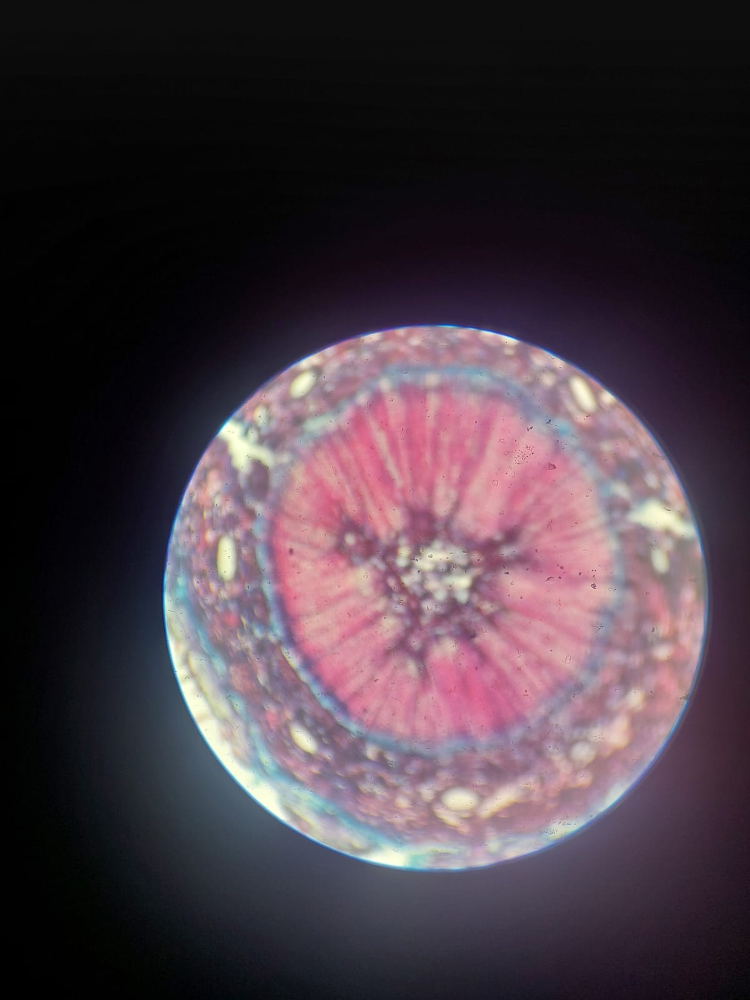
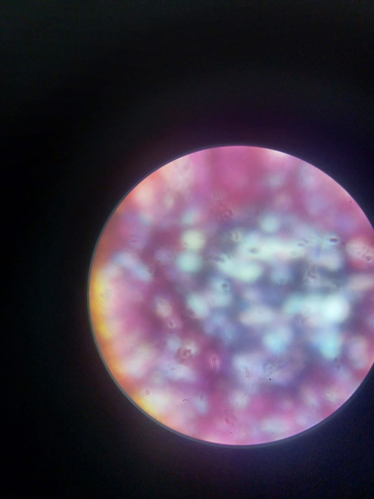
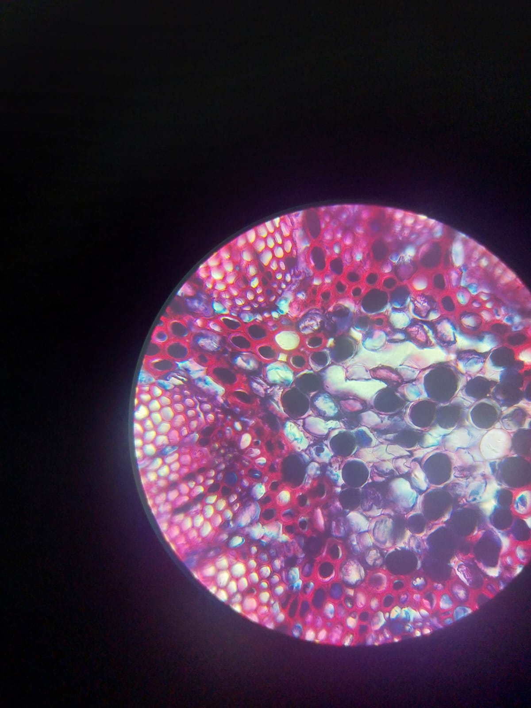
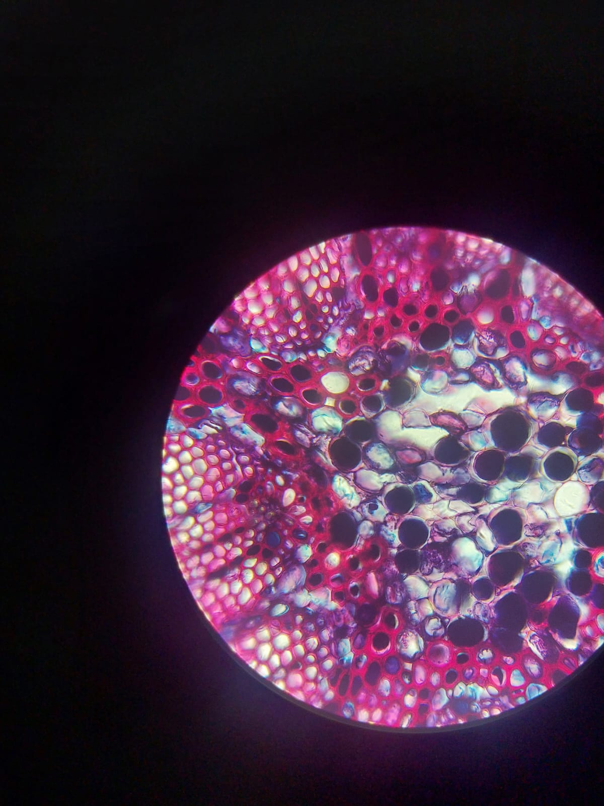

Introducción al procedimiento
“Bienvenido al laboratorio virtual. En este OVA aprenderás a usar correctamente un microscopio. Seguirás pasos interactivos que te permitirán observar cualquier muestra con precisión y seguridad.”

¡Comencemos!
Paso 1 . Colocar la Muestra
“Selecciona la muestra que deseas observar y colócala sobre la platina del microscopio.”
Paso 2. Coloque la muestra en la platina
Paso 3. Enfoque con objetivo 10x
- Levanta la platina hasta su límite superior.
- Gira el revolver para colocar el objetivo de 10x.
- Ajusta lentamente el enfoque con el tornillo macrométrico hasta que la muestra comience a aparecer.
- Enfoca con precisión usando el tornillo micrométrico para observar los detalles.
4. Lograras ver una imagen como esta una ves que suabemente ajuste con el tornillo micrométrico

Paso 4. Enfoque con objetivo 40x
- Baja ligeramente la platina para evitar que el objetivo toque la muestra.
- Gira el revolver hasta colocar el objetivo de 40x en posición.
- Ajusta con cuidado el enfoque usando el tornillo macrométrico, solo un poco, hasta que la imagen comience a verse.
- Afina los detalles con el tornillo micrométrico, hasta obtener una imagen nítida y clara.
Observa con atención los detalles de la muestra a este aumento intermedio.

Estructura de Tallo 40x enfocado

Paso 5 Enfoque con objetivo seco fuerte (100X)
Procedimiento con el objetivo seco fuerte (100x)
- Baja la platina cuidadosamente para evitar dañar la muestra o el objetivo.
- Gira el revolver hasta colocar el objetivo de 100x en posición.
- Coloca una gota de aceite de inmersión sobre la muestra (si se trata de un objetivo de inmersión).
- Eleva lentamente la platina hasta que el aceite y el objetivo entren en contacto, sin ejercer presión.
- Enfoca con cuidado utilizando únicamente el tornillo micrométrico, hasta obtener una imagen clara y bien definida.
- Observa con precisión los detalles más finos de la muestra, evitando movimientos bruscos del enfoque.
1. Enfoque a 100x
2. Enfocar a 100x
Estructura de tallo enfocada a 100x con aceite de imersión
